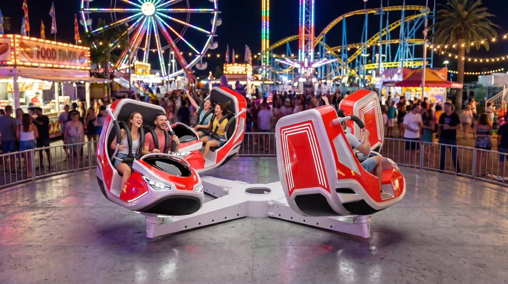
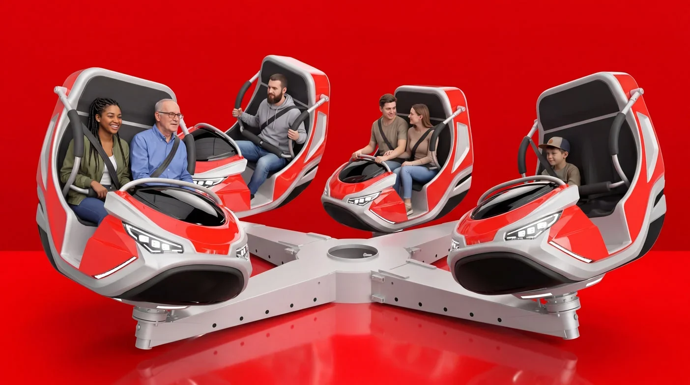
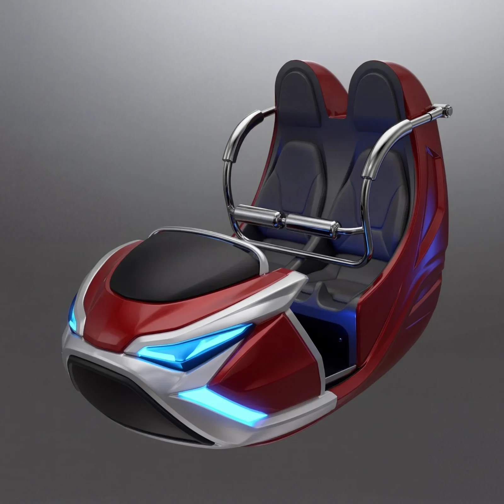
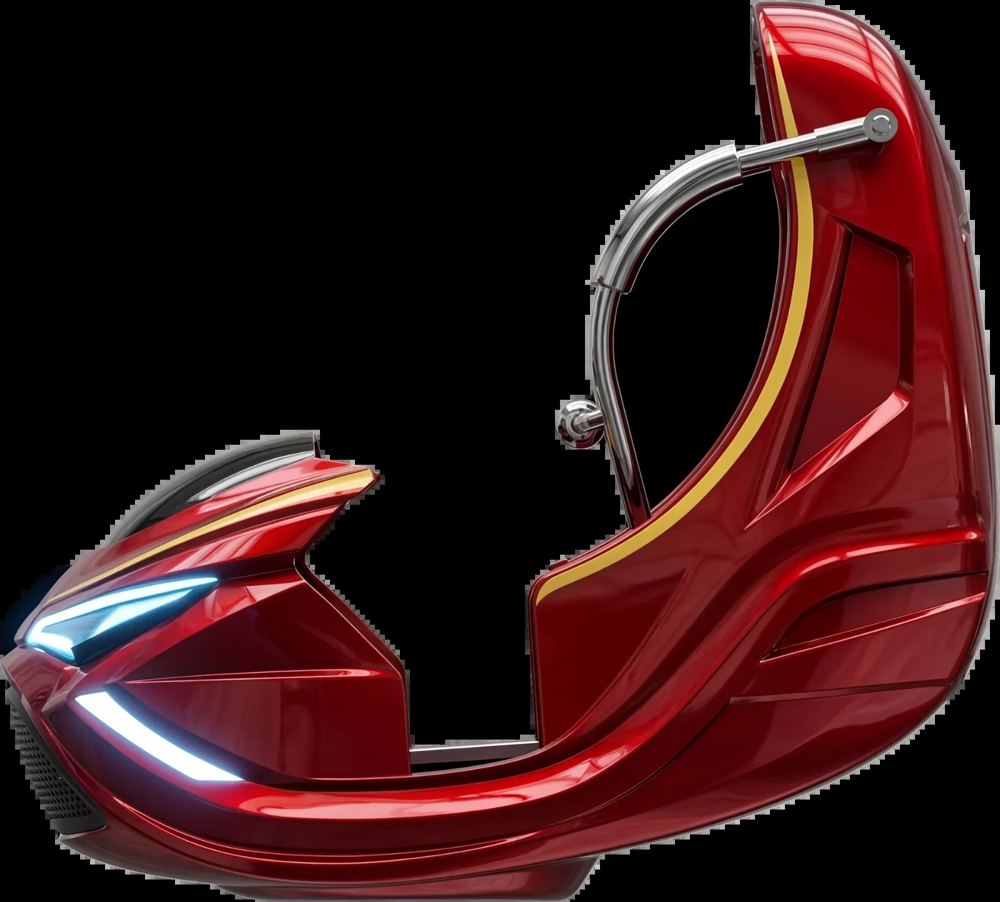
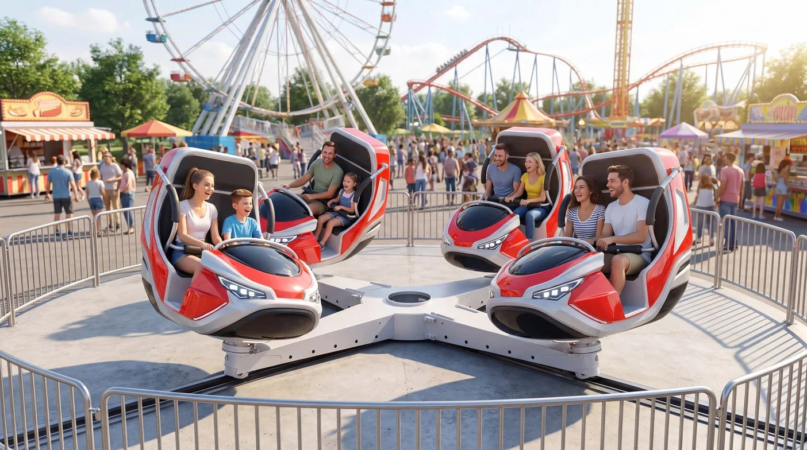
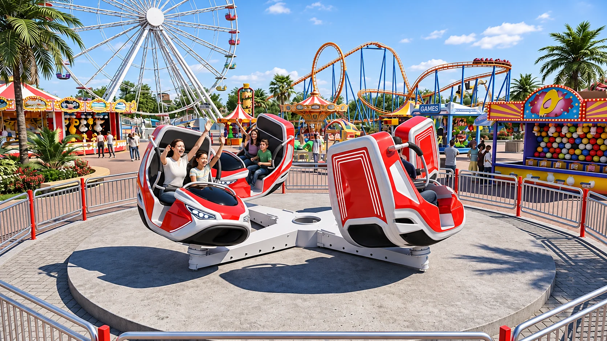
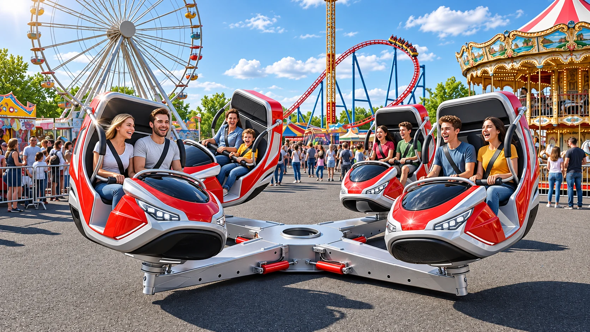

Önce gövde, sonra şasi
Lunapark araçlarında gövde tasarımı çoğu zaman şasi mühendisliğinin ardından gelir. Bu projede sıra tersine çevrildi: dört gondolun oranı, oturma ergonomisi ve ışık imzası önce kurgulandı; X şasi bu forma göre çözüldü.
Ünite tek bir tahrikle iki eksende hareket eder. Merkezî göbek X şasiyi döndürürken her gondol kendi kaidesinde eğimlenir; katmanlı hareket böylece ek bir motor gerektirmeden elde edilir.
Dört gondol, merkezî bir göbeğe bağlanan X şasinin uçlarına yerleşir. Göbek şasiyi döndürürken gondollar kendi kaidelerinde eğimlenir.

Gondol tek parça bir fiberglas kabuktur. Sırtlık, yan koruma ve ön maske aynı yüzeyin devamı olarak çözüldü; emniyet ve ışık bu kabuğa eklenir.


Ünite bir family flat ride olarak kurgulandı: bariyer çemberinin içinde döner, yolcular bariyer kapısından alınır.



Merkezî göbek X şasiyi döndürür, gondollar kendi kaidelerinde eğimlenir. Dönüş ve eğim tek bir motordan gelir.
Sırtlık, yan koruma ve ön maske sürekli bir yüzey olarak çözüldü; kabuk otomotiv boyasıyla kaplanır.
Kromaj borudan kucak bariyeri oturma pozisyonunda kilitlenir ve iki tarafta tutamak barındırır. Yüksek sırtlık iki kişilik oturma alanını yanal ivmeye karşı destekler.
Işık hattı ön maskede ve yan omuz çizgisinde yer alır; gece görünürlüğü ve marka kimliği aynı elemanla sağlanır.